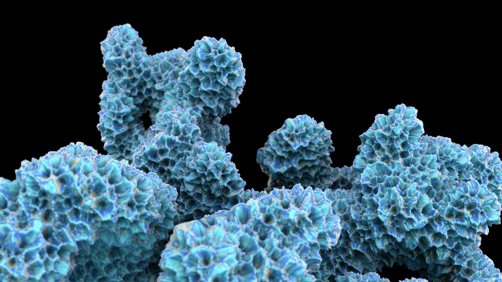

Oceanic
Forms the ocean arrived at first — coral, bloom and branching pattern grown again, freed from having to survive anything.

Forms the ocean arrived at first — coral, bloom and branching pattern grown again, freed from having to survive anything.